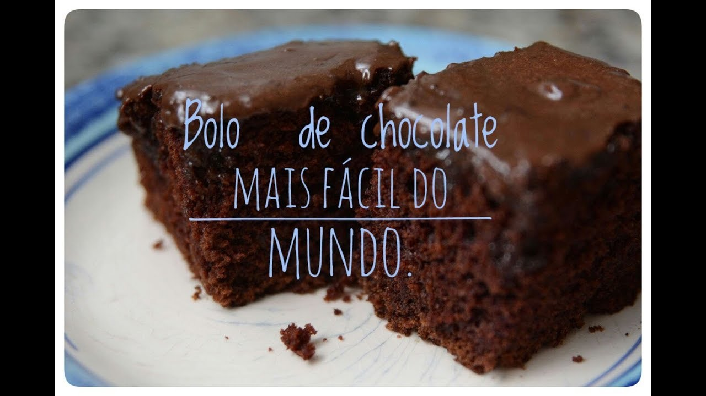

Receita de bolo
Bolo de chocolate

Ingredientes
- 500g de farinha de trigo
- 2 ovos
- 100ml de leite
- 1 cs manteiga
- 3 cs chocolate em pó
Como fazer:
-
Com a maçã, é possível fazer incríveis receitas doces e salgadas,
como torta de maçã com creme de uva, tartelete de maçã, filé de
frango com maçã, salada de tomate cereja com queijo e maçã e muito mais.
Hoje vamos te mostrar uma receita de bolo de maçã simples.